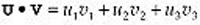
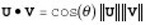
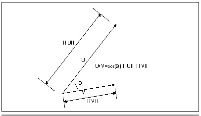
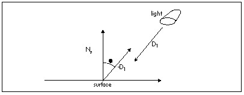

| Previous | Table of Contents | Next |
I’ll be working in a left-handed coordinate system, whereby if you wrap the fingers of your left hand around the z axis with your thumb pointing in the positive z direction, your fingers will curl from the positive x axis to the positive y axis. The positive x axis runs left to right across the screen, the positive y axis runs bottom to top across the screen, and the positive z axis runs into the screen.
For our purposes, projection is the process of mapping coordinates onto a line or surface. Perspective projection projects 3-D coordinates onto a viewplane, scaling coordinates according to their z distance from the viewpoint in order to provide proper perspective. Objectspace is the coordinate space in which an object is defined, independent of other objects and the world itself. Worldspace is the absolute frame of reference for a 3-D world; all objects’ locations and orientations are with respect to worldspace, and this is the frame of reference around which the viewpoint and view direction move. Viewspace is worldspace as seen from the viewpoint, looking in the view direction. Screenspace is viewspace after perspective projection and scaling to the screen.
Finally, transformation is the process of converting points from one coordinate space into another; in our case, that’ll mean rotating and translating (moving) points from objectspace or worldspace to viewspace.
For additional information, you might want to check out Foley & van Dam’s Computer Graphics (ISBN 0-201-12110-7), or the chapters in this book dealing with my X-Sharp 3-D graphics library.
Now we’re ready to move on to the dot product. Given two vectors U = [u1 u2 u3] and V = [v1 v2 v3], their dot product, denoted by the symbol •, is calculated as:

(eq. 2)
As you can see, the result is a scalar value (a single real-valued number), not another vector.
Now that we know how to calculate a dot product, what does that get us? Not much. The dot product isn’t of much use for graphics until you start thinking of it this way

(eq. 3)
where q is the angle between the two vectors, and the other two terms are the lengths of the vectors, as shown in Figure 61.1. Although it’s not immediately obvious, equation 3 has a wide variety of applications in 3-D graphics.
The simplest case of the dot product is when both vectors are unit vectors; that is, when their lengths are both one, as calculated as in Equation 1. In this case, equation 3 simplifies to:
(eq. 4)
In other words, the dot product of two unit vectors is the cosine of the angle between them.
One obvious use of this is to find angles between unit vectors, in conjunction with an inverse cosine function or lookup table. A more useful application in 3-D graphics lies in lighting surfaces, where the cosine of the angle between incident light and the normal (perpendicular vector) of a surface determines the fraction of the light’s full intensity at which the surface is illuminated, as in

(eq. 5)

Figure 61.1 The dot product.
where Is is the intensity of illumination of the surface, Il is the intensity of the light, and q is the angle between -Dl (where Dl is the light direction vector) and the surface normal. If the inverse light vector and the surface normal are both unit vectors, then this calculation can be performed with four multiplies and three additions—and no explicit cosine calculations—as

(eq. 6)
where Ns is the surface unit normal and Dl is the light unit direction vector, as shown in Figure 61.2.
One question equation 6 begs is where the surface unit normal comes from. One approach is to store the end of a surface normal as an extra data point with each polygon (with the start being some point that’s already in the polygon), and transform it along with the rest of the points. This has the advantage that if the normal starts out as a unit normal, it will end up that way too, if only rotations and translations (but not scaling and shears) are performed.
The problem with having an explicit normal is that it will remain a normal—that is, perpendicular to the surface—only through viewspace. Rotation, translation, and scaling preserve right angles, which is why normals are still normals in viewspace, but perspective projection does not preserve angles, so vectors that were surface normals in viewspace are no longer normals in screenspace.

Figure 61.2 The dot product as used in calculating lighting intensity.
| Previous | Table of Contents | Next |